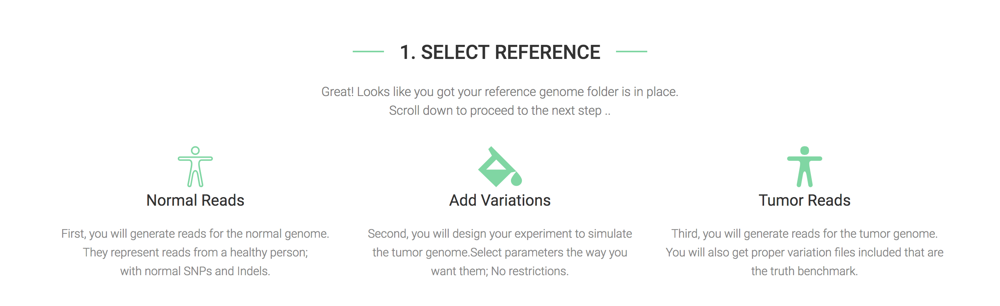

Simulator User Guide¶
Note
If you are familiar with Docker, you can skip reading this section and find the package on Docker Hub under nabavilab/varsimlab:1.0.
1. Installing Docker¶
Docker is supported on Linux, Mac and Windows amongst other operating systems too. So, you are guaranteed to get the tool running without worrying about installing other dependencies.
To install Docker:
- Linux (ubuntu): https://docs.docker.com/engine/installation/linux/ubuntu/ (check left-side menu for other distributions)
- Mac: https://docs.docker.com/docker-for-mac/install/
- Windows: https://docs.docker.com/docker-for-windows/install/
2. Prepare The Reference Genome¶
There are two ways to easily run VarSimLab for a reference genome
- Download a pre-prepared folder to use from http://nabavilab.uconn.edu/datasets/varsimlab/ .
- Prepare your own reference (super easy).
To prepare a reference genome, follow these steps:
- Create a new folder to hold your files.
- Copy the reference genome in FASTA format (.FASTA | .FA ) to the folder. You can also download genome from UCSC Genome Browser https://genome.ucsc.edu/cgi-bin/hgGateway
- Copy targte regions file in BED format (.BED) to the folder. You can also download the target files from UCSC Table Browser https://genome.ucsc.edu/cgi-bin/hgTables
- Create a text file and name it manifest.json. Put the following text after replacing the values of the keys with the name of the files you just copied. Save the file and close it.
{
"reference": "reference.fa",
"targets": "reference-targets.bed"
}
That’s it! Your reference is ready to generate reads from.
3. Running VarSimLab¶
Navigate to the reference folder you created (or downloaded) above.
If you download one of our prepared reference genomes, you can simply execute .run.sh script. Once you see the below message, you can navigate to the web browser to http://localhost:8000

If you have prepared the folder yourself, execute the following command in the terminal.
docker run -v $(pwd):/ref -p 12345:8000 nabavilab/varsimlab:1.0
The -v option mounts the current folder to the container, where the pipeline will check for the reference files. The -p mounts links port 8000 from the container to port 12345 on you local machine (you can choose other ports too). Now, naviate to the web browser to http://localhost:12345
Note
Make sure you see the message that says: found all required simulation files in place; simulation is READY. If you see a different message, that means you are not running the container from the current directory that contains manifest.json and/or other files.
When you navigate to the web browser, you should see the following message
The package automatically detects the reference files and initiate the simulation engine for you.
4. Select Simulation Parameters¶
As the figure shows, all you need to do is to plug in your values for the different simulation parameters. You can leave the default values too.

The output_prefix is where the reads will be generated. If you run multiple simulations, make sure to use different output prefixes for each run. Once you are ready, hit run.

5. Understanding Simulator Results¶
There are two folders inside the output_prefix folder.
- Normal: it will contain .FASTQ file for reads that represent the control (or normal) sample.
- Tumor: it will contain .FASTQ file for reads that represent the tumor sample. In addition, it will contain the benchmark data that tells you where SNPs, Indels and CNVs for each allele in each subclone generated.